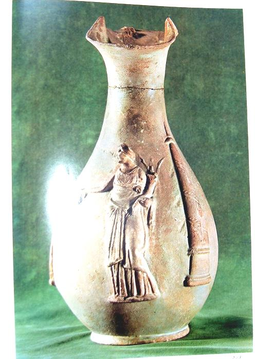

📖
قاموس ومصطلحات المحاضرة للمرشد (اضغط هنا لفتح / طي القاموس)
TOUR GUIDE BILINGUAL GLOSSARY
▼
قاموس ومصطلحات المحاضرة للمرشد (اضغط هنا لفتح / طي القاموس)
TOUR GUIDE BILINGUAL GLOSSARY💡 تنبيه للمرشد السياحي: هذه المصطلحات والكلمات مستخرجة من المنهج الأكاديمي المعتمد، ومزودة بالنطق الصوتي والمعنى السياقي للمرشد:
Philopator
فيلوباتور (المحب لأبيه / Father-loving)
اللقب الملكي لبطليموس الرابع، ومعناه باليونانية "محب أبيه"، وتزوج طبقاً لتقاليد أسرته من شقيقته الملكة أرسينوي الثالثة.
Idle & Self-indulgent
عاطل ومتساهل منغمس في شهواته
الوصف الحرفي الذي أطلقه الكتاب الأكاديمي (ص 48) على بطليموس الرابع، حيث أهمل واجبات الدولة وتفرغ للملذات والاحتفالات الخليعة.
Promiscuous Life
الحياة الخليعة وحفلات المجون
نمط الحياة التافهة التي انغمس فيها الملك الشاب محاطاً برفقاء السوء والمحظيات، مما أضعف هيبة العرش وأطمع الأعداء في غزو مصر.
Agathocles & Agathoclea
أغاثوكليس والمحظية أغاثوكليا
أقرب أصدقاء الملك ومحظيته، استغلا ضعفه للسيطرة المطلقة على البلاط الملكي والقرارات الحكومية وتوزيع المناصب على أقاربهما.
Sosibius
الوزير سوسيفيوس (سوسيبوس)
رئيس الوزراء والمالية الداهية في عهد بطليموس الثالث والرابع والخامس؛ يسّر للملك ملذاته ليحكم قبضته على السلطة ودبر اغتيال أفراد العائلة المالكة.
Poisoning of Berenice II
تسميم الملكة الأم برنيكي الثانية
دبر سوسيفيوس وفيلوباتور قتل الملكة الأم بالسم بعد أن رغبت في عزل ابنها وتعيين أخيها الأصغر ماجاس، الذي قُتل بدوره في حمامه غدراً.
Coele-Syria
سورية المجوفة (كول سيريا)
منطقة إقليمية بالغة الأهمية في بلاد الشام كانت مركز النزاع، تميزت بغاباتها وأشجارها الخشبية الضرورية لبناء السفن والأسطول الحربي (هامش ص 49).
Mercenaries
الجنود المرتزقة اليونانيون
جنود مأجورون من مقدونيا واليونان اعتمد عليهم البطالمة تقليدياً، وفشل سوسيفيوس في استقدام أعداد كافية منهم لصد هجوم أنطيوخوس الثالث.
Egyptian Levies
المجندون المصريون الوطنيون (20,000 جندي)
لأول مرة في تاريخ البطالمة، تم تجنيد عشرين ألف مصري وتدريبهم في معسكر سري خارج الإسكندرية للدفاع عن أرض مصر في معركة رفح.
Macedonian Phalanx
كتائب الفالنج المقدونية برماح الساريسا
تشكيل قتالي ثقيل برماح خشبية هائلة طولها أكثر من 5 أمتار، أثبت فيه الجنود المصريون صلابة وتفوقاً كاسحاً حسم معركة رفح لصالح مصر.
Battle of Raphia (217 BC)
معركة رفح الخالدة (217 ق.م)
المعركة الكبرى عند حدود مصر الشرقية (رفح) بين جيش مصر (50 ألف مقاتل) وجيش السلوقيين (60 ألف مقاتل)، وانتهت بنصر مصري مؤزر.
African vs Asian War Elephants
صدام الأفيال الحربية الإفريقية والآسيوية
أضخم صدام أفيال موثق في التاريخ: 102 فيل هندي آسيوي ضخم لأنطيوخوس ضد 73 فيلاً إفريقياً غابياً لبطليموس جُلبت من ساحل البحر الأحمر.
The Dividing Line
الخط الفاصل ونقطة التحول التاريخية
وصف المؤرخين لمعركة رفح؛ حيث أدرك المصريون أن قوتهم هي التي تحمي العرش، فتمردوا وثاروا مطالبين بحقوقهم السياسية والمناصب العليا.
The Theban District Revolts
ثورات طيبة والصعيد القومية الكبرى
انتفاضة مسلحة عارمة فجرها المصريون في صعيد مصر انطلاقاً من طيبة للمطالبة بحقوقهم، وأسفرت عن استقلال الصعيد بملوك مصريين لقرابة عقدين.
ارتقاء العرش، بطانة الفساد، ومؤامرات التسميم والتصفية في البلاط الملكي
🇪🇬 الترجمة الأكاديمية والشرح التفصيلي للفقرة
ص ٤٨ بالكتاب• نسب الملك واعتلاء العرش (221 ق.م): بطليموس الرابع هو ابن الملك بطليموس الثالث إيورجيتس والملكة برنيكي الثانية. اتخذ لنفسه لقب «فيلوباتور» (Philopator) ومعناه «المحب لأبيه»؛ وطبقاً لتقاليد هذه الأسرة تزوج من شقيقته الشقيقة أرسينوي الثالثة (Arsinoe III).
• شخصية الملك وسقوطه في الرذيلة: ارتقى بطليموس الرابع العرش عام 221 ق.م وكان شاباً في الرابعة والعشرين (24) من عمره. كان متكاسلاً وعاطلاً عن تدبير شؤون مملكته (idle)، ومتساهلاً منغمساً في شهواته (self-indulgent)، وأحاط نفسه برفقاء سوء فاسدين، وعاش حياة خليعة ومجوناً تاماً (promiscuous life).
• سيطرة أغاثوكليس والمحظية أغاثوكليا: اتخذ الملك شخصاً سيئ السمعة والأخلاق يُدعى «أغاثوكليس» (Agathocles) كأعز أصدقائه وندمائه، بينما اتخذ من شقيقته «أغاثوكليا» (Agathoclia) خليلة ومحظية أولى له؛ ونجحت أغاثوكليا في فرض سيطرتها المطلقة على عقل الملك وقراراته.
• دور الوزير الداهية سوسيفيوس (Sosibius): كان سوسيفيوس وزيراً للمالية في عهد والده بطليموس الثالث، واستمر في نفس المنصب النافذ في عهد بطليموس الرابع؛ وكان هو العقل المدبر الذي يسر وسهل حياة المجون والخليعة للملك لكي يصرفه عن شؤون الحكم ويستأثر هو بزمام السلطة الحقيقية.
• مذبحة العائلة المالكة وتسميم برنيكي الثانية: استاءت الملكة الأم «برنيكي الثانية» بشدة من مسلك ابنها المخزي، وقررت عزله عن العرش واستبداله بأخيه الأصغر «ماجاس» (Magas). لكن سوسيفيوس كشف خطة الملكة الأم وأبلغ فيلوباتور بالأمر؛ وكانت النتيجة المروعة أن:
- قُتلت الملكة الأم برنيكي الثانية دسّاً بالسم (poisoned)!
- قُتل أخوه الأمير ماجاس غدراً أثناء استحمامه بالماء المغلي (taking a bath)!
- اغتيل عمه الأمير ليسيماخوس ليقضي سوسيفيوس على كل منافس محتمل للعرش!
ORIGINAL ENGLISH SOURCE
Ptolemy IV Philopator King 221-204 BC.
"The son of Ptolemy III, Ptolemy IV took the name of 'Philopator' which means 'father-loving'; according to the custom of this dynasty, he married his sister, Arsinoe III."
"Ptolemy IV ascended the throne when he was 24 year old in 221 BC, he was idle (عاطل) and self indulgent (متساهل) surrounded himself by some bad friends, moreover he lived a promiscuous life. He took Agathocaleis who was known for bad manners as his best friend, and his sister Agathoclia his mistress. Agathoclia was able to take control over the king."
"Sisobius was the finance minister during the life time of his father, continued the same post during the reign of the king Ptolemy IV, and he was the one who facilitated the promiscuous life (الحياة الخليعة) of the king."
"Queen Berenice II mother of Philapator didn't like the behavior of her son and she decided to replace him by his younger brother Magas, but Sisobius know about the queen's wish and informed Philapator, as a direct result queen Berenice II was poisoned, his brother Magas was killed while taking a bath. Moreover his uncle Lysimachus was also killed."
📜
استزادة للمرشد: ☠️
حكاية للتاريخ والإرشاد: سم في قصر الإسكندرية وسقوط الملكة صاحبة «خصلة النجوم»!
حكاية تاريخية
▼
الملكة برنيكي الثانية، التي خلدت الأساطير خصلات شعرها الذهبية في عنان السماء، لم تكن لتتصور أن نهايتها ستكون كأساً مسموماً يقدمه لها ابنها البكر بطليموس الرابع! حين رأت برنيكي ابنها غارقاً في الليالي الماجنة مع أغاثوكليا، بينما وزيره سوسيفيوس ينهب ثروات البلاد، خشيت على عرش السلالة وقررت تنصيب ابنها الثاني ماجاس، وكان شاباً فارساً شجاعاً. لكن عيون سوسيفيوس كانت تملأ أروقة القصر؛ فوشى بها إلى الملك الضعيف موهماً إياه بأن حياته في خطر، فصدر الأمر المشؤوم: دُس السم للملكة الأم في طعامها، واقتُحم حمام الأمير ماجاس وسُكب عليه ماء يغلي حتى لفظ أنفاسه! خلا البلاط للمحظية والوزير الفاسد، لكن ثمن هذه الخيانة كاد يكلف مصر استقلالها أمام زحف السلوقيين.
الحرب السورية الرابعة، غزو سورية المجوفة، وخديعة المفاوضات وتجنيد المصريين
🇪🇬 الترجمة الأكاديمية والشرح التفصيلي للفقرة
ص ٤٩ بالكتاب• اندلاع الحرب السورية الرابعة: اندلعت الحرب بين الملك بطليموس الرابع والملك السلوقي الطموح أنطيوخوس الثالث الكبير (Antiochus III)؛ حيث كان أنطيوخوس يعلم تماماً بفساد وضعف بطليموس الرابع وتدهور الجيش، فقرر استغلال الموقف واجتاح إقليم سورية المجوفة (Cole of Syria) واقترب بجيشه من حدود مصر!
• الأهمية الاستراتيجية لسورية المجوفة (هامش ص 49): كانت سورية المجوفة موقعاً استراتيجياً حيوياً للغاية، وتكمن قيمتها العسكرية في غاباتها الخشبية الكثيفة التي كانت تُستخدم أخشابها في صناعة وبناء السفن الحربية للأسطول.
• مصر بلا جيش.. وخديعة المفاوضات: عندما وصل أنطيوخوس الثالث إلى مشارف الحدود، أدرك الوزير سوسيفيوس الكارثة: مصر لا تملك جيشاً نظامياً قادراً على الدفاع عن أرضها! فلجأ إلى حيلة ذكية؛ حيث أرسل وفداً دبلوماسياً للتفاوض حول معاهدة سلام بشأن سورية المجوفة بهدف واحد فقط: «كسب الوقت (gain time)».
• أزمة المرتزقة والقرار التاريخي الأخطر: في الوقت نفسه، أرسل سوسيفيوس ضباطاً إلى مقدونيا واليونان لجلب جنود مرتزقة (Mercenaries)، لكنه فشل في تجنيد أعداد كافية. وهنا اتخذ قراراً ثورياً قلب موازين تاريخ البطالمة:
- قام بتجنيد حشود من المصريين الوطنيين (Egyptian levies).
- أنشأ معسكراً تدريبياً سرياً ضخماً خارج مدينة الإسكندرية.
- درّب 20,000 مصري على تشكيلات كتائب المشاة الثقيلة (Macedonian Phalanx) برماح الساريسا، وتحت قيادة ضباط يونانيين ومقدونيين!
ORIGINAL ENGLISH SOURCE
The 4th Syrian War:
"The 4th Syrian war took place between king Ptolemy IV and Antiochus III knew about the bad behavior and manner of Ptolemy IV, so king Antiochus decided to take advantage of the situation, and he invade the Cole of Syria and almost reached the Egyptian border."
"King Antiochus III reached the Egyptian border, Sisobius, the minister of finance tried to stop the invasion of Egypt because Egypt has no army to defend it, then he send an embassy to Antiochus III to negotiate a peace treaty concerning the Cole of Syria, in the same time, he send some officers to Macedonia and Greece to bring back some Mercenaries (الجنود المرتزقة) to join the Ptolemaic army, also in the same time, he recruited Egyptians levies, and trained them in a camp outside Alexandria, they served in Phalanx under the command of Macedonia and Greek officers. Sisobius failed to recruit enough number of Greek mercenaries."
📜
استزادة للمرشد: 🛡️
حكاية للتاريخ والإرشاد: كيف خدع سوسيفيوس إمبراطور آسيا وصنع جيش الفلاحين المسلح؟
حكاية تاريخية
▼
كان ملوك البطالمة يخشون تسليح المصريين أكثر من خشيتهم لأعدائهم الخارجيين؛ فكان الجيش حكراً على المقدونيين والإغريق، بينما الفلاح المصري يكدح ويدفع الضرائب فقط. لكن عندما وقف أنطيوخوس الثالث بجيشه الجرار على أبواب سيناء، وجد سوسيفيوس خزائن الإسكندرية خاوية من المرتزقة والفرسان. فاستغل دهاءه الدبلوماسي وأرسل مبعوثين يتجادلون مع أنطيوخوس حول بنود معاهدة وهمية طوال شهور الشتاء، بينما كان في ضواحي الإسكندرية ينزع الفأس من يد الفلاح الصعيدي والبحراوي ويضع مكانه رمح الساريسا المقدوني بطول 6 أمتار! تدرب 20 ألف شاب مصري على انضباط كتائب الفالنج الحديدية ليتحولوا في أشهر معدودة إلى الصخرة الصلبة التي حطمت أحلام السلوقيين في رمال رفح.
ملحمة معركة رفح (217 ق.م): صدام الأفيال، صمود الفالنج المصري، والنصر الساحق
🇪🇬 الترجمة الأكاديمية والشرح التفصيلي للفقرة
ص ٤٩ - ٥٠ بالكتاب• الزحف نحو رفح (217 ق.م): اكتشف الملك أنطيوخوس الثالث أن المفاوضات الطويلة لم تكن سوى خدعة لكسب الوقت وتجهيز القوات، فزحف بجيشه الجرار حتى وصل إلى مدينة رفح (Raphah) على الحدود الشرقية لمصر في صيف عام 217 ق.م.
• مقارنة القوى وأعداد الجيوش والأفيال:
- جيش أنطيوخوس الثالث السلوقي: نحو 60,000 مقاتل و102 فيل حربي آسيوي هندي ضخم.
- جيش بطليموس الرابع المصري: نحو 50,000 مقاتل (من بينهم 20,000 جندي مصري في كتائب الفالنج) و73 فيلاً حربياً إفريقياً.
• الالتحام وصدام الأفيال والنصر البطلمي: التقى الجيشان في معركة رفح الضارية، وشهدت المعركة اشتباكاً عنيفاً للأفيال في الأجنحة. وانتهت المعركة بـ انتصار ساحق ومظفر للجيش البطلمي المصري، وهزيمة منكرة لجيش أنطيوخوس الثالث وفراره من الميدان.
• الفضل الحاسم للجنود المصريين ونتائج النصر:
- يعود الفضل الأول والأساسي في تحقيق هذا النصر العظيم إلى كتائب الفالنج التي كانت تتكون في غالبيتها الساحقة من الجنود المصريين (consists mainly of Egyptian soldiers)!
- نتيجة للنصر في رفح، استعادت مصر السيطرة الكاملة على إقليم سورية المجوفة.
- المكسب التاريخي للمصريين: سُمح للمصريين لأول مرة بالوصول والترقي إلى أعلى المناصب والرتب القيادية في الجيش والإدارة الحكومية.
ORIGINAL ENGLISH SOURCE
"King Antiochus find out the aim of the negotiation is only to gain time and not only to achieve a peaceful situation, he marched with his army in 217 BC until he reached the city of Raphah."
"The number of Antiochus army was about 60,000, and 102 Asian elephants while the Egyptian one was about 50,000 including the 20,000 Egyptian soldier, 73 Africans elephants. The two armies met each other, and the battle of Raphah ended with the factory (victory) of Ptolemaic army, this victory was mainly due to the phalanx which consists mainly of Egyptian soldiers."
"As the result of the battle, the Egyptians occupied the Cole of Syria, and the Egyptians were permitted to reach high positions both in the army and in the administration."
📜
استزادة للمرشد: 🐘
حكاية للتاريخ والإرشاد: صدام العمالقة عند رفح.. والفالنج المصري الذي صدم إمبراطور الشام
حكاية تاريخية
▼
في صباح 22 يونيو 217 ق.م، ارتجت رمال رفح تحت وطأة أكثر من 175 فيلاً حربياً و110 آلاف جندي! بدأت المعركة بذعر الفيلة الإفريقية لبطليموس وتقهقر جناحه الأيسر، وظن أنطيوخوس الثالث أنه كسب المعركة فاندفع في ملاحقة الفرسان الهاربين. لكن في قلب المعركة، حدث ما لم يتوقعه أحد؛ امتطت الملكة الشابة أرسينوي الثالثة صهوة جوادها وشعرها يتطاير بين الصفوف، تناشد الجنود بالدفاع عن شرف نسائهم وأطفالهم وأرض مصر. فتقدمت كتائب الفالنج المكونة من 20 ألف فلاح مصري، مشبوكة الرماح كجدار حديدي لا يُخترق! صدمت الكتائب المصرية قلب الجيش السلوقي ومزقته شر ممزق، وحين عاد أنطيوخوس من مطاردته، وجد جيشه قد تشتت ودُمر قلبه، تاركاً آلاف القتلى في الرمال لتسجل مصر أعظم انتصاراتها في الشرق!
«الخط الفاصل» في تاريخ البطالمة، ثورة طيبة الكبرى، والرحيل الغامض للملك
🇪🇬 الترجمة الأكاديمية والشرح التفصيلي للفقرة
ص ٥٠ بالكتاب• معركة رفح كالخط الفاصل (The Dividing Line): يُجمع المؤرخون على أن معركة رفح كانت نقطة التحول والخط الفاصل في تاريخ الأسرة البطلمية بأكملها.
• صحوة الوعي وثورة المصريين العارمة: بعد عودة المقاتلين المصريين إلى ديارهم مكللين بنصر رفح وبسلاحهم في أيديهم، أدركوا قوتهم الحقيقية وثاروا ضد حكم بطليموس الرابع؛ مطالبين بحقوقهم الكاملة والمشروعة في إدارة الدولة وقيادة الجيش ووقف التمييز الإغريقي.
• طيبة عاصمة الثورة الوطنية (Thebes): كان مركز هذه الثورات العارمة هو إقليم طيبة (Thebes / الأقصر) والصعيد؛ حيث نجح بطليموس الرابع في قمع بعض التمردات الأولية بـ وحشية وقسوة بالغة (ruthless in dealing with Egyptians)، لكن قمعه لم يكن نهاية للمطاف؛ بل استمرت ثورات الصعيد متأججة وحكم ملوك مصريون الصعيد بصورة مستقلة، وظل المصريون يثورون حتى نهاية وسقوط الأسرة البطلمية!
• أرسينوي الثالثة وولادة إبيفانس: أنجبت الملكة أرسينوي الثالثة لزوجها بطليموس الرابع طفلاً هو الأمير الصغير «بطليموس الخامس إبيفانس» (Ptolemy V Epiphanes).
• الموت الغامض لفيلوباتور (204 ق.م): توفي بطليموس الرابع عام 204 ق.م عن عمر يناهز 41 عاماً في ظروف غامضة تماماً (the exact reason for his death unknown)، وترك ابنه طفلاً صغيراً في سن السادسة أو السابعة تحت وصاية والدته الملكة أرسينوي الثالثة.
ORIGINAL ENGLISH SOURCE
"The battle of Raphah can be considered the dividing line in the history of the Ptolemaic dynasty. After the return of the Egyptians to Egypt, they revolted against Ptolemy IV, they demand their rights in the administration and the army, their center of revolts was Thebes, Ptolemy IV succeeded in suppressing the revolts and he was ruthless in dealing with Egyptians however it wasn't the end of such revolts and the Egyptians continued to revolt till the end of the Ptolemaic dynasty."
"King Ptolemy IV married his sister queen Arisnoe III and she gave birth to a child called Ptolemy IV (Epiphanes), at the age 41 Philopator died, the exact reason for his death unknown, he left his son at the age 6 or 7 years under the regency of his mother queen Arsinoe III."
📜
استزادة للمرشد: 🔥
حكاية للتاريخ والإرشاد: كيف فجرت دماء رفح بركان الثورة الوطنية في طيبة والصعيد؟
حكاية تاريخية
▼
حين سكتت مدافع السيوف في رفح، نظر المقاتلون المصريون العائدون إلى قراهم وقالوا لبعضهم: «لقد فر فرسان مقدونيا وهرب أنطيوخوس أمام رماحنا نحن! فلماذا يحكمنا غرباء يفرضون الضرائب ويهينون عقائدنا؟». لم يعد الفلاح المصري هو ذلك الرعية الخاضعة؛ بل تحول إلى مقاتل مدرب يملك السلاح والثقة. وسرعان ما اشتعلت نار الثورة في طيبة، وطرد المصريون الحكام اليونانيين ونصبوا ملكاً مصرياً وطنياً يُدعى «حور ونفر» كفرعون شرعي لمصر العليا، فكانت معركة رفح سلاحاً ذا حدين: أنقذت عرش بطليموس الرابع لأعوام قليلة، لكنها غرست بذرة الثورة الوطنية التي حطمت أركان الهيمنة الإغريقية في مصر إلى الأبد!
🖼️ الشواهد الأثرية المعتمدة بالكتاب الجامعي (ص ٥١)
الصورة والنقش الأثري المعتمد في المقرر الدراسي للدكتورة مرفت ماهر أمين والخاص بالمحاضرة السابعة:

إبريق الفيانس للملكة أرسينوي الثالثة
إبريق (Oinochoe) طقسي نادر من الفيانس يُجسد الملكة أرسينوي الثالثة بطلة معركة رفح وزوجة بطليموس الرابع، ويُظهر طقوس سكب النبيذ والقرابين في عبادة الملكات المؤلهات (دراسة طومسون، أكسفورد 1973).
إحصائيات القوى في معركة رفح (ص 49)
• 73 فيلاً حربياً إفريقياً (صيدت من ساحل البحر الأحمر).
• 102 فيل حربي آسيوي هندي ضخم.
لماذا معركة رفح هي «الخط الفاصل»؟
تعتبر معركة رفح النقطة التي تحولت فيها السياسة البطلمية من السيادة الإغريقية المطلقة إلى بداية الانهيار والاضطراب:
- المصريون حملوا السلاح وأدركوا قوتهم الحقيقية.
- رفض الخضوع للظلم والمطالبة بالمناصب القيادية العليا.
- اندلاع ثورة طيبة الكبرى واستقلال الصعيد 20 عاماً.
- بداية اعتماد البطالمة على المرتزقة وحماية روما لاحقاً.
افتح تدريبات وأسئلة الدرس
🎯 بنك الأسئلة التدريبي التفاعلي للمحاضرة السابعة (10 أسئلة)
مُعد طبقاً لنص ومصطلحات د. مرفت ماهر أمين — اختيار من متعدد مع التصحيح الفوري والشرح النموذجي.
نتيجة التقييم الفوري
أجب عن الأسئلة واضغط «تصحيح الاختبار» لإظهار نتيجتك وملاحظات المراجعة.